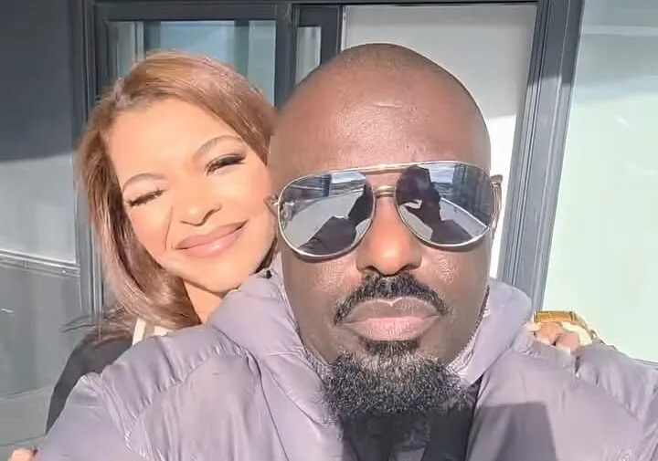

JUST IN: 10 police vans deployed as Jimmy Odukoya attends service

Ten police patrol vans and more than 15 officers were stationed around the Fountain of Life Church headquarters in Ilupeju, Lagos, on Sunday as the church’s leadership dispute continued. Worshippers underwent security checks at the entrance, including searches of bags and pockets and requests to remove metal objects before entering the auditorium.
Jimmy Odukoya attended the service and was warmly welcomed by the congregation. He told worshippers he had heard about an interim court order but had not been formally served. The order restrains him from presenting himself as the church’s senior pastor and spiritual head, and from interfering with its governance, administration and activities. The reported terms do not bar him from attending services.
The service departed from the church’s usual Sunday programme. Odukoya said there would be no regular sermon, as Bishop Mike Okonkwo, founder and presiding bishop of The Redeemed Evangelical Mission, had preached earlier. Odukoya told the congregation the remaining programme would include praise, dancing and offerings. The service was still underway when the report was filed and was expected to end at about 11:30 a.m. It was unclear whether Okonkwo’s attendance was connected to the dispute.
The court order followed a decision by a group of trustees to withdraw its recognition of Odukoya and appoint Rotimi Okpaise as interim spiritual and administrative leader. The trustees cited a purported December 2021 succession video in which the late church founder, Taiwo Odukoya, named Adekunle Areogun as his preferred successor and assigned Jimmy Odukoya roles relating to administration and the youth church.
Odukoya and supporters of his leadership have rejected the trustees’ position, arguing that his appointment as senior pastor in September 2023 was valid under the church’s constitution. He has filed a suit at the Federal High Court in Lagos challenging his removal and seeking to invalidate resolutions made by those opposing his leadership. Sunday’s gathering was the first service at the headquarters since the interim court order.
Source: Premium Times